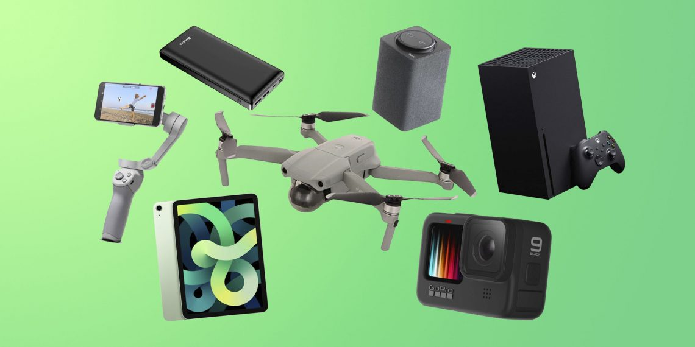

Что такое гаджеты и для чего они нужны?
Слово «гаджет» в переводе с английского означает «устройство», «приспособление». Примечательно, что в начале прошлого века моряки английского флота называли гаджетами все технические приспособления и устройства, названия которых они не знали или не могли запомнить.
В наши дни термин «гаджет» применяют преимущественно к различным электронным устройствам, предназначенным для усовершенствования и облегчения жизни человека.
Часть гаджетов предназначена для расширения функционала и обеспечения комфортной работы при подключении к более сложным техническим устройствам. Например, Bluetooth-гарнитурыили Bluetooth-браслеты, подключаемые по беспроводному каналу к мобильным телефонам. Другие способны работать самостоятельно: планшеты, смартфоны, электронные книги, автомобильные навигаторы, аудио плееры и т.п.
Гаджеты получили широкое распространение в самых различных областях. В спорте нашли применение электронные браслеты, измеряющие длину пробежки, частоту пульса и потраченные калории, цифровые скакалки, запоминающие количество выполненных прыжков и другие, так называемые фитнесс-гаджеты.
В медицине применяют различные электронные пластыри, экзоскелеты, трикодеры и т.д. Гаджет выполненный в виде изящного браслета может постоянно контролировать уровень сахара в крови диабетика, кроме того в него может быть встроен шприц и капсула с инсулином.
Огромное количество гаджетов разработано для развлечений: игровые приставки, музыкальные проигрыватели, очки виртуальной или дополненной реальности и многое другое.
Гаджеты предназначены для самых разных целей. Согласно статистике, на каждого человека в мире приходится как минимум три технических устройства. Они не только не дают человеку скучать, но и значительно облегчают его жизнь. Как правило, гаджеты имеют небольшие размеры и вес и предназначены для решения узкоспециализированных задач.
Все разновидности электронных «примочек» перечислить довольно сложно, так как каждый день появляются новые высокотехнологичные устройства. И большинство из нас уже не сможет отказаться от использования полюбившихся гаджетов, которые делают нашу жизнь более комфортной.